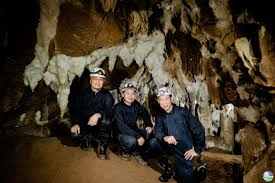
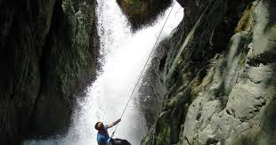
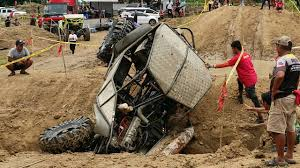

Overview
Adrenaline Tourism in Zamboanga Sibugay is designed for thrill-seekers and those who crave high-intensity outdoor experiences. The province’s diverse terrain—ranging from deep limestone caves to rushing white waters—provides the ultimate playground for extreme sports.
Whether you are scaling vertical cliffs or navigating through subterranean river systems, the raw and untamed beauty of Sibugay offers a heart-pounding escape for the truly brave.
Extreme Thrill Destinations
Extreme Spelunking at Bangaan Caves (Tungawan)

For the ultimate adrenaline rush, the Bangaan Caves in Tungawan offer a challenging subterranean experience. Navigating through narrow squeezes, vertical drops, and massive chambers filled with ancient formations requires physical endurance and nerves of steel. It is one of the most technical and rewarding cave systems in the Zamboanga Peninsula.
Canyoning and Waterfall Trekking (Siay)

The rugged heights of Siay are home to hidden waterfalls that serve as the perfect backdrop for canyoning. Adrenaline junkies can engage in cliff jumping and technical rappelling down slippery rock faces. The trek to these sites alone is an extreme test of stamina through dense jungle trails and rushing river crossings.
Off-Road 4x4 Challenges

Zamboanga Sibugay’s unpaved mountain roads and muddy plantation trails provide the perfect setting for Off-Road 4x4 and motocross adventures. These specific routes test the limits of both driver and machine, offering an unpredictable and muddy thrill ride through the province’s interior highlands.